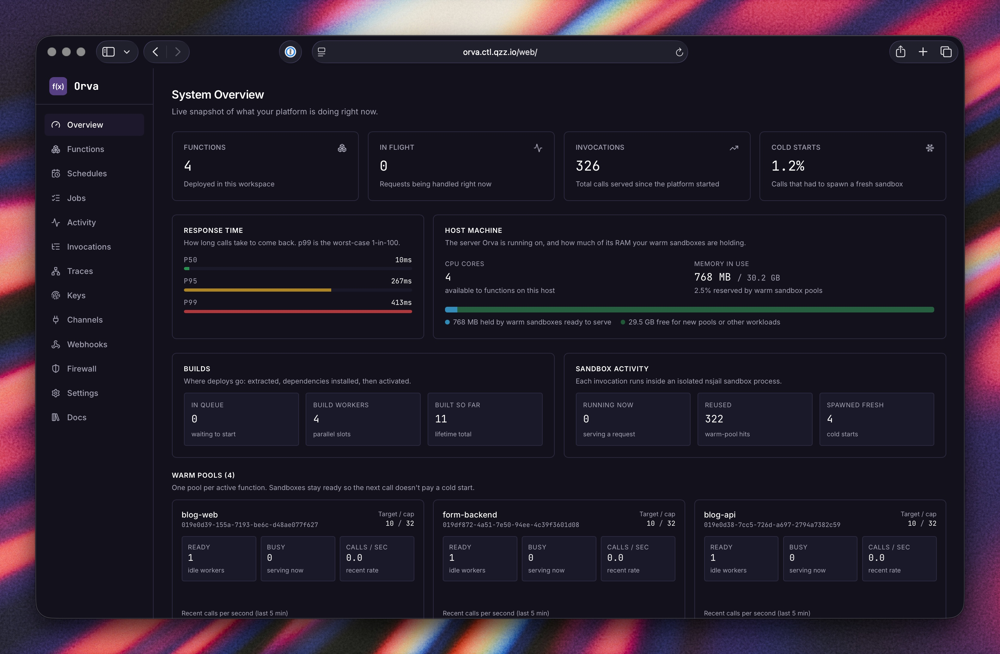
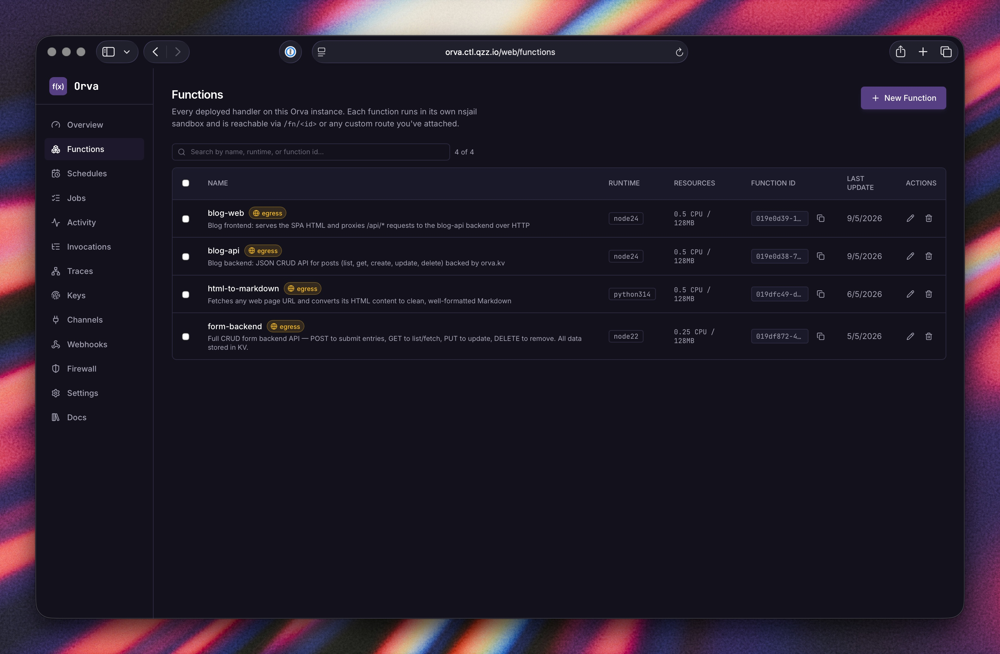
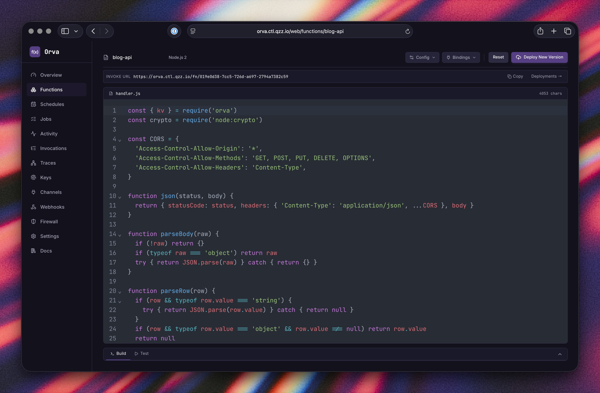
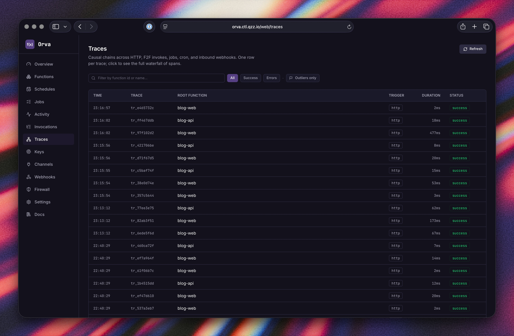
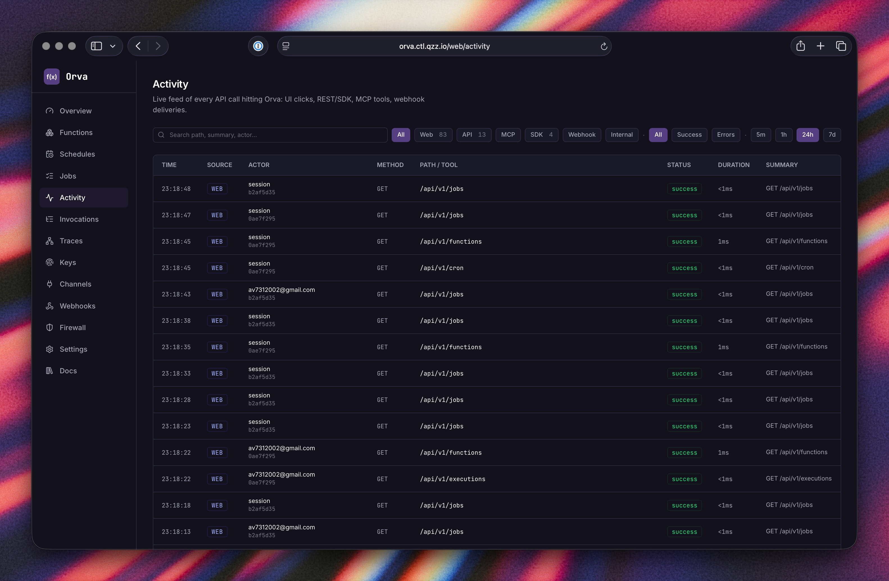
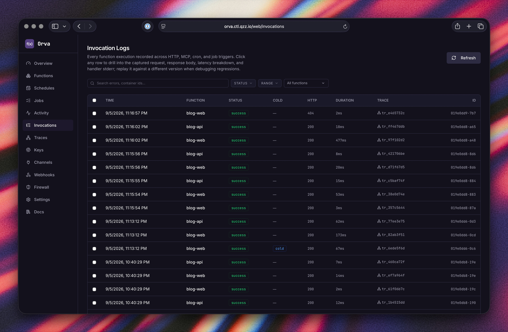
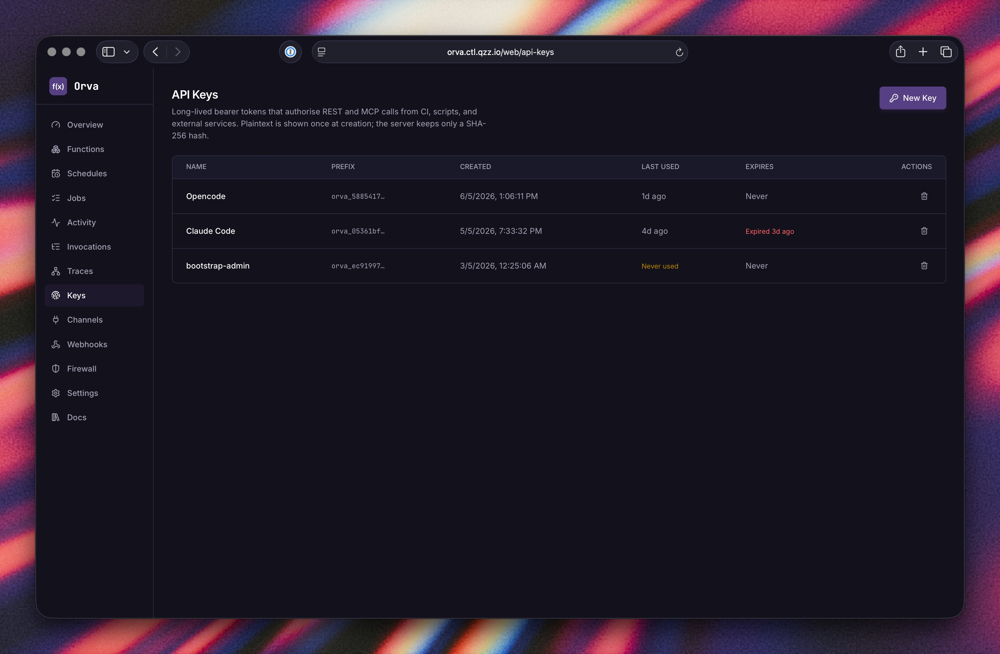
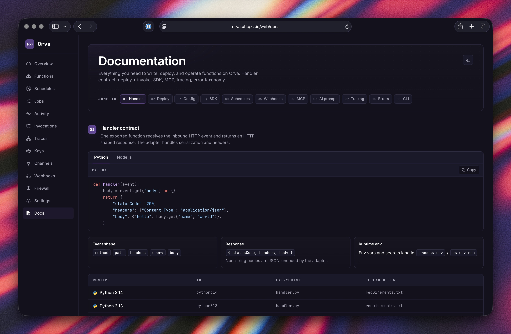
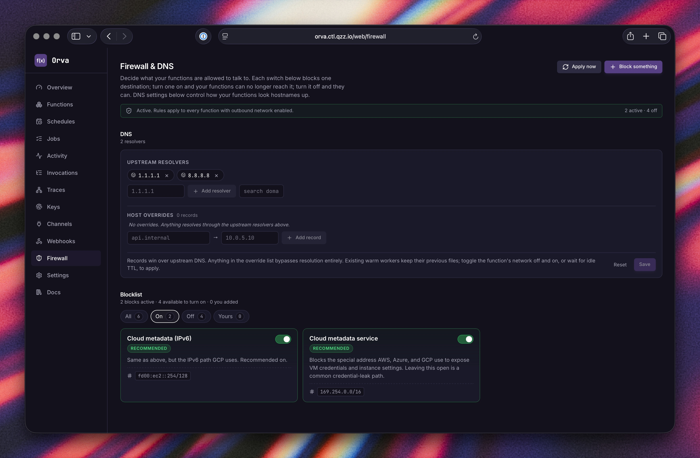
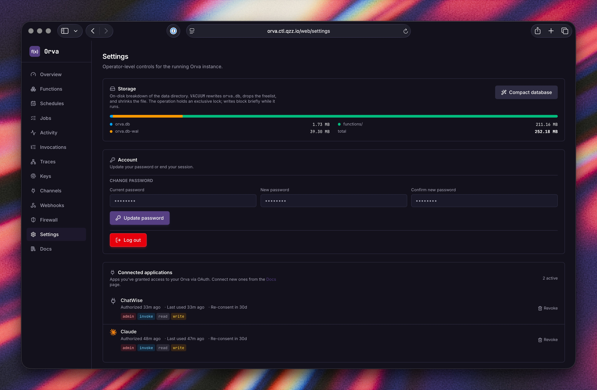

Orva
Write a function, hit deploy.
Orva runs your JavaScript, Python, or TypeScript code in an isolated nsjail sandbox and exposes it over HTTP — on hardware you own. No cloud account, no per-invocation billing, no external dependencies. One Docker container. Persistent SQLite storage. Built-in dashboard.
docker run -d --name orva \
-p 8443:8443 \
--cap-add SYS_ADMIN \
--security-opt seccomp=unconfined \
--security-opt apparmor=unconfined \
--security-opt systempaths=unconfined \
-v orva-data:/var/lib/orva \
ghcr.io/harsh-2002/orva:latest
Open http://localhost:8443 — onboarding takes ~30 seconds.
What's included
14 capabilities. One container, one port, zero external dependencies.
Multi-runtime
Node.js 22, Node.js 24, Python 3.13, Python 3.14, TypeScript — all in one binary.
nsjail isolation
Every invocation runs in a fresh nsjail sandbox — five overlapping Linux kernel boundaries per function.
Warm pools
Idle workers stay resident between calls. Back-to-back invocations skip the spawn cost entirely. Pool size is configurable per function.
KV store
Per-function key-value storage backed by SQLite with optional TTL. kv.put / kv.get / kv.delete / kv.list — browsable from the dashboard.
Background jobs
jobs.enqueue(name, payload) — persisted queue with configurable retries and exponential backoff. Visible in the dashboard with retry and cancel.
Cron schedules
Fire any function on a cron expression. The dashboard shows last run, next run, and current status.
Function-to-function
invoke('name', payload) calls another function via the warm pool. The call becomes a child span in the same distributed trace — no HTTP roundtrip.
Distributed tracing
Every invocation chain is recorded automatically. HTTP, F2F calls, and background jobs all share one trace_id. Waterfall view in the dashboard; zero code changes needed.
Custom routes
Map a path like /webhooks/stripe to a function so external callers use a clean URL instead of a function UUID.
Secrets
Per-function encrypted secrets, injected as env vars at sandbox spawn time. Never logged or stored in plaintext.
Inbound webhooks
Signed inbound trigger endpoints — GitHub, Stripe, Slack, and generic HMAC — that fan into a function.
Rollback
Every deploy is content-hashed and archived. Roll back to any prior version in one click or one CLI command.
MCP server
70 tools at /mcp — Claude Code, Cursor, claude.ai, and any OAuth-capable MCP client can create functions, deploy code, manage secrets, and read logs without leaving the chat.
16 templates
Stripe webhooks, GitHub events, JWT auth, OAuth, CSV→JSON, URL shortener — all pickable in the editor, ready to customise.
Everything the operator needs
Nothing they don't. Click any screenshot to view full size.








/web/docs, no tab-switching


Five overlapping Linux kernel boundaries
Each layer is enforced by the kernel, not by Orva code. Orva configures the boundaries; the kernel holds them.
UID 0 inside the sandbox is mapped to UID 65534 (nobody) on the host.
All 64 Linux capability bits are cleared — verified in /proc/self/status.
The function cannot escalate to host root.
/code is a read-only bind mount of the function's versioned directory.
/tmp is a private tmpfs, wiped after each worker exits.
No host filesystem, no other functions' code, no /proc of the host.
Hard limits per function: memory.max, cpu.max,
pids.max. The host refuses new spawns past 80% total memory reservation.
~150 syscalls blocked: mount, unshare, bpf,
kexec_load, init_module, ptrace, and more.
Blocked attempts log and kill the process — never silently fail.
Default network_mode: none — loopback only, no inbound possible.
Functions opt in to network_mode: egress for outbound HTTPS via
an nftables allowlist.
Verified via /proc/self/status — CapEff reads 0 inside every sandbox. Apparent root inside is nobody on the host.
Functions cannot mutate their own source tree. A fresh tmpfs per invocation means one function's tmp is never visible to another.
Memory, CPU, and pid limits enforced by cgroup v2. A runaway function cannot exhaust host resources or fork-bomb the system.
Loopback only by default. Outbound HTTPS requires explicit opt-in per function. Inbound connections from outside the sandbox are not possible in either mode.
Kata 3.30.0 (QEMU + Cloud Hypervisor) tested end-to-end on 2026-05-13. Kata puts a real Linux kernel under the orvad container — nsjail keeps working unchanged.
clone() is rejected by gVisor's user-space kernel).
| Orva (nsjail) | Firecracker / VMs | Plain Docker | |
|---|---|---|---|
| Kernel | Shared with host | Separate kernel per VM | Shared with host |
| Isolation primitive | Linux namespaces + seccomp + cgroup v2 | Hardware virtualisation (KVM) | Linux namespaces + cgroup |
| Syscall surface | ~150 syscalls blocked via Kafel policy | Near-zero (hardware VM boundary) | Unfiltered by default |
| Capability drop | All 64 Linux caps cleared | N/A (separate kernel) | Partial (Docker defaults) |
| Cold start | ~50–200 ms | ~125 ms (Firecracker MicroVM) | N/A |
| Memory per worker | ~30 MB | ~5 MB per MicroVM | Varies |
| Good for | Homelabs, internal tools, trusted code | Multi-tenant cloud, untrusted third-party code | General app containers |
Three ways to run Orva
Pick the one that fits your setup. All three use the same image.
The quickest way to get Orva running. One command, then open the dashboard.
docker run -d --name orva \
-p 8443:8443 \
--cap-add SYS_ADMIN \
--security-opt seccomp=unconfined \
--security-opt apparmor=unconfined \
--security-opt systempaths=unconfined \
-v orva-data:/var/lib/orva \
ghcr.io/harsh-2002/orva:latest
Then open http://localhost:8443 — onboarding takes ~30 seconds.
Recommended for persistent setups. Includes volumes, restart policy, resource limits, and health checks.
curl -fsSL https://raw.githubusercontent.com/Harsh-2002/Orva/main/docker-compose.yml \
-o docker-compose.yml
docker compose up -d~12 MB standalone binary. No Docker required. Use it to talk to a remote Orva server from your laptop, CI runner, or any machine. Ships for Linux, macOS, and Windows on amd64 + arm64.
curl -fsSL https://github.com/Harsh-2002/Orva/releases/latest/download/install-cli.sh | shirm https://github.com/Harsh-2002/Orva/releases/latest/download/install-cli.ps1 | iexorva login --endpoint https://your-orva.example.com --api-key orva_...
orva functions list
orva deploy my-fn ./src
orva invoke my-fn --body '{"name":"world"}'
orva logs my-fn --followSame protocol. Four runtimes.
Every function exports a single handler. The adapter handles the rest.
const { kv, invoke, jobs } = require('orva')
exports.handler = async (event) => {
const count = (await kv.get('n') || 0) + 1
await kv.put('n', count)
return { statusCode: 200, body: { count } }
}from orva import kv, invoke, jobs
def handler(event):
count = (kv.get("n") or 0) + 1
kv.put("n", count)
return {"statusCode": 200, "body": {"count": count}}import { kv, invoke, jobs } from 'orva'
export const handler = async (event: any) => {
const count = ((await kv.get('n')) ?? 0) + 1
await kv.put('n', count)
return { statusCode: 200, body: { count } }
}SDK pre-installed in every sandbox
The orva module is available in every function with no install step.
It reaches back to the Orva API over loopback only — no network access required.
kv.put(key, value, { ttl? }) // persist state
kv.get(key) // read back
kv.delete(key)
kv.list(prefix?) // scan keys
invoke('fn-name', payload) // call another function
// child span in the same trace
jobs.enqueue('fn-name', data) // background + retriesDeploy in minutes.
One container. Your hardware. No cloud account, no billing, no lock-in.